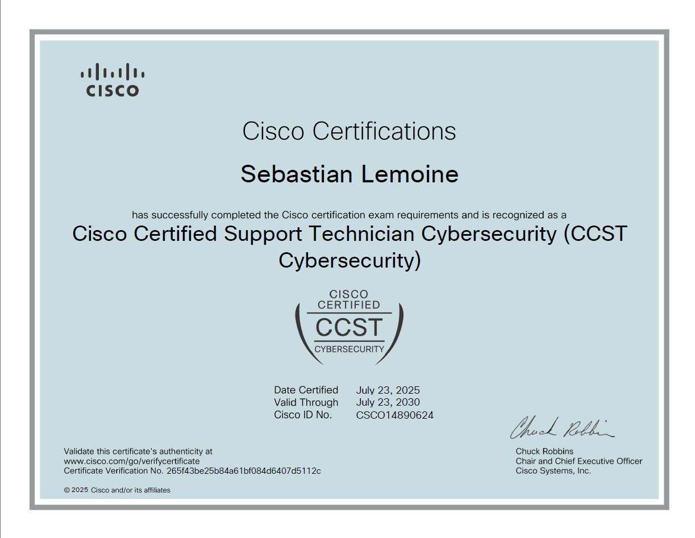

Cybersecurity Fundamentals | Security Certification
Cisco Certified Support Technician (CCST) Cybersecurity es una certificación de Cisco orientada a validar los conocimientos fundamentales necesarios para comprender los principios de la ciberseguridad en entornos empresariales. Abarca conceptos de redes, amenazas, vulnerabilidades, controles de seguridad y buenas prácticas para la protección de sistemas, proporcionando una base sólida para iniciar una carrera en operaciones de seguridad (SOC).
Esta certificación proporciona una base sólida para comprender las alertas generadas por herramientas de seguridad. Ayuda a interpretar eventos relacionados con redes, usuarios, accesos y posibles comportamientos maliciosos, siendo una base importante para comenzar como SOC Analyst L1.

Certificación oficial obtenida como parte del desarrollo profesional en ciberseguridad.
Certificación orientada a fundamentos de ciberseguridad en entornos corporativos, enfocada en la identificación, análisis y mitigación de amenazas.
Durante la formación desarrollé comprensión de los principios de seguridad aplicados a redes y entornos empresariales, incluyendo análisis de riesgos, control de accesos y monitoreo básico de eventos de seguridad.
La certificación fortaleció la comprensión del trabajo en entornos SOC (Security Operations Center), especialmente en el análisis de eventos de seguridad, interpretación de alertas, identificación de comportamientos sospechosos y entendimiento del flujo básico de gestión de incidentes dentro de equipos Blue Team.